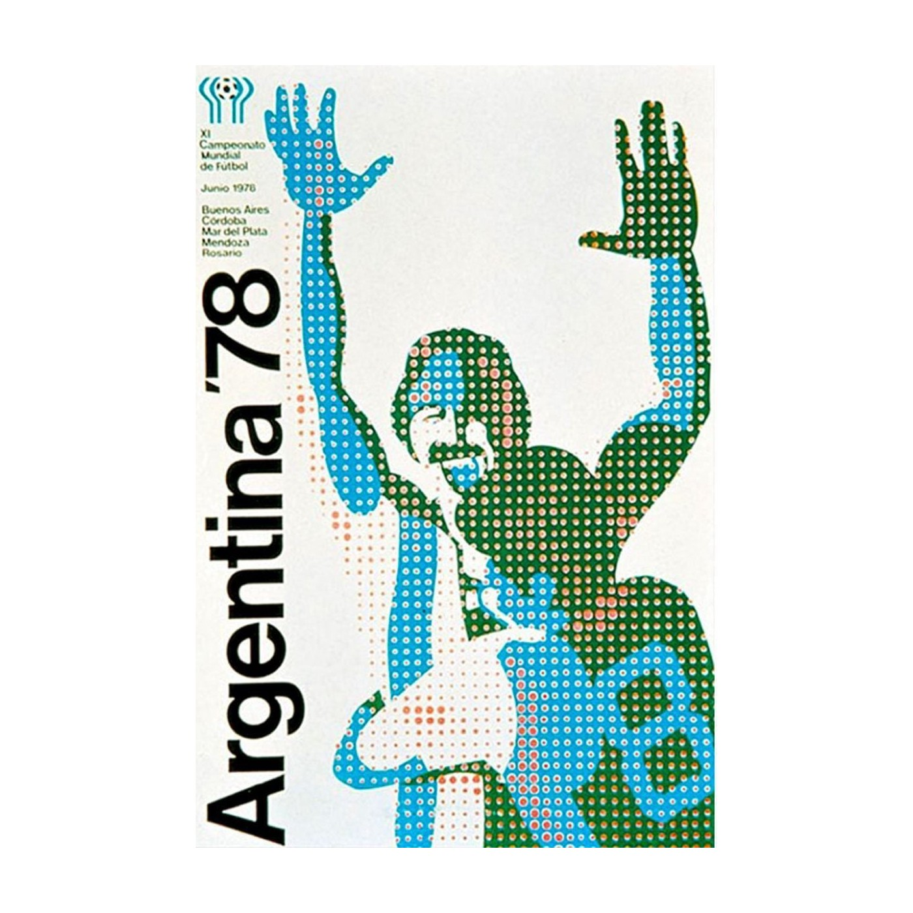
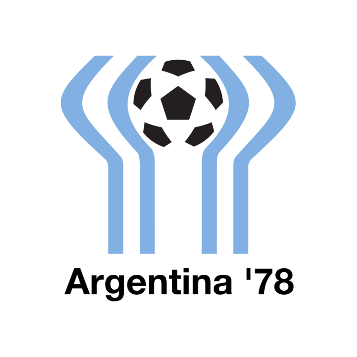

Official Poster
The official poster for the 1978 FIFA World Cup, held in Argentina, features a stylized, pointillist depiction of two football players celebrating a goal with their arms raised.
Designed as a result of a 1978 contest, the poster’s graphic style is characterized by the use of dots (halftone patterns) in the colors of the Argentine flag—light blue and white—alongside a prominent "Argentina '78" vertical text.
Employs a pop-art or pointillist technique where the image is formed by colored dots.
The two figures with raised arms capture the "Goal Celebration," a universal symbol of football joy.
Features bold, clean sans-serif typography with "Argentina '78" and details of the host cities (Buenos Aires, Rosario, Córdoba, Mar del Plata, and Mendoza).
Another common visual from this tournament includes the "Sol de Mayo" (Sun of May) integrated with two stylized hands holding a football.

Mandatos Internacionales
The official 1978 FIFA World Cup poster was created by the Argentine advertising and design agency Mandatos Internacionales.
Mandatos Internacionales is widely believed to have also produced propaganda for the military junta that ruled Argentina at the time.
Many observers have noted that the pointillist figures appear to "disappear" when viewed up close, a detail often interpreted as a chilling, perhaps unintentional, reference to the "disappeared" (victims of the regime's Dirty War).